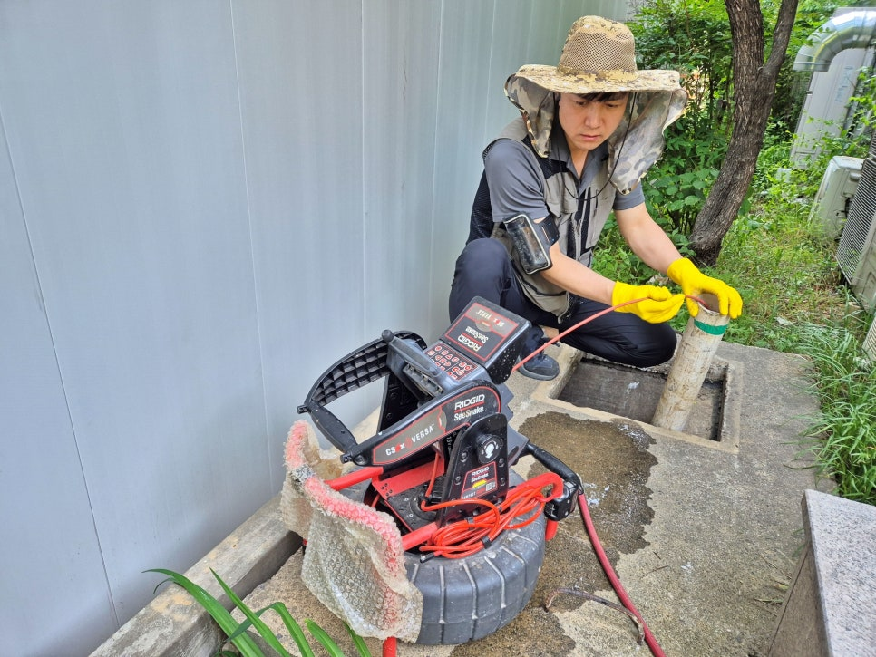
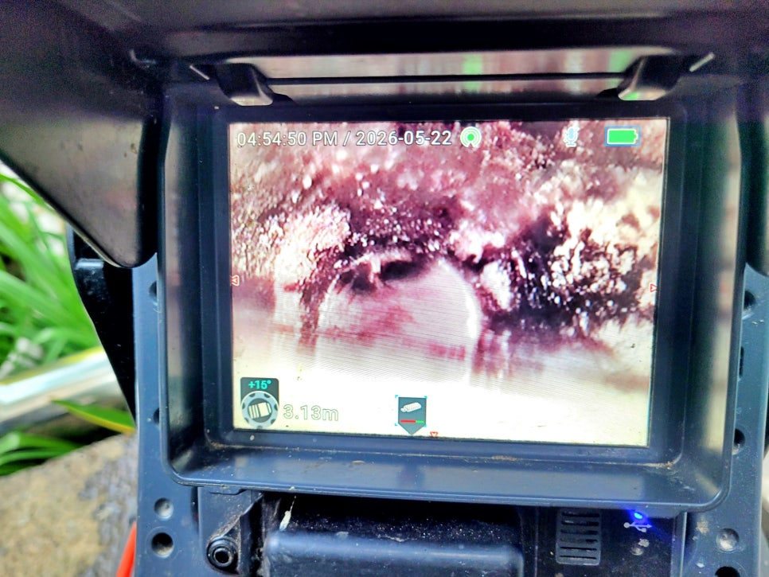
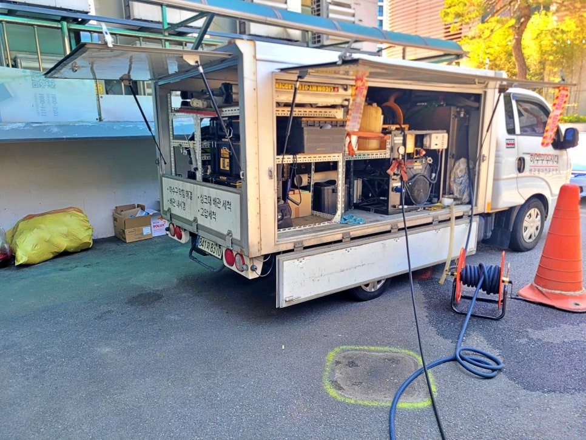
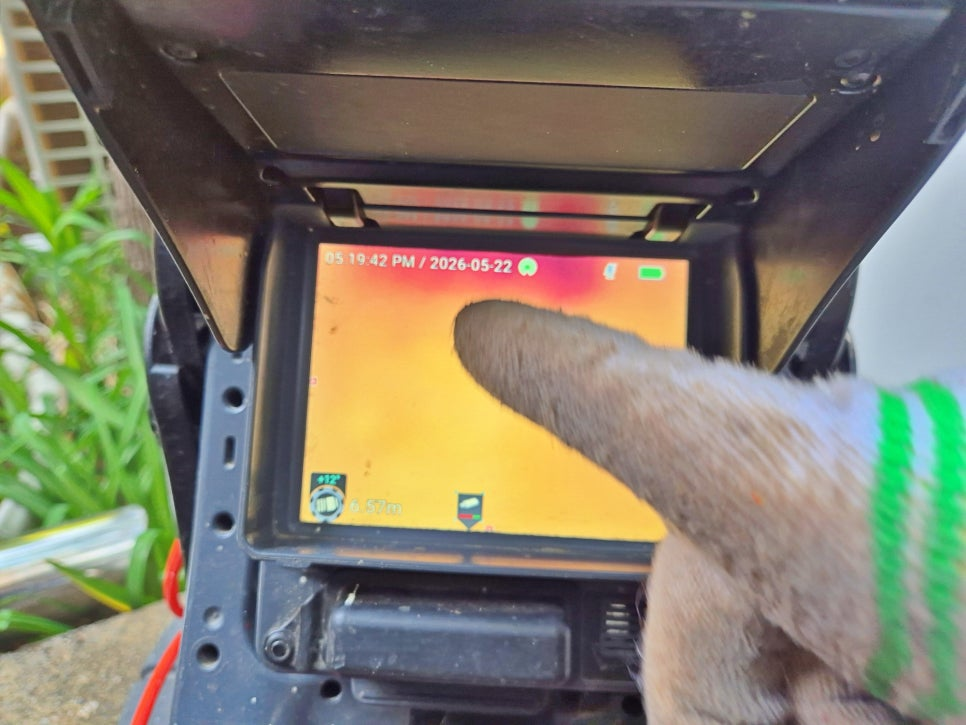
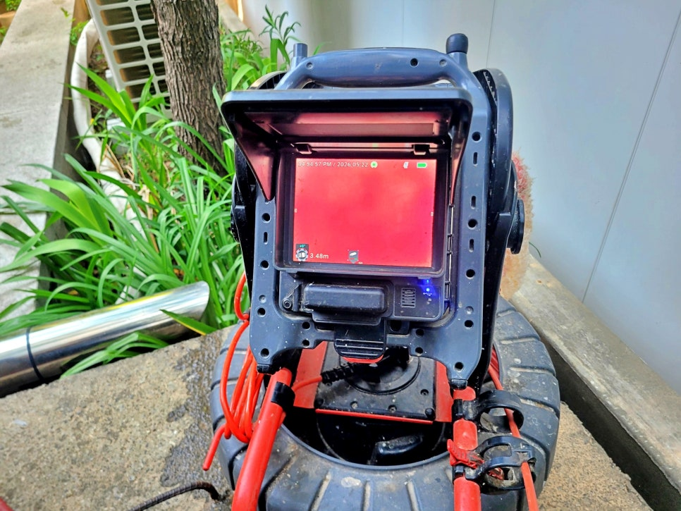
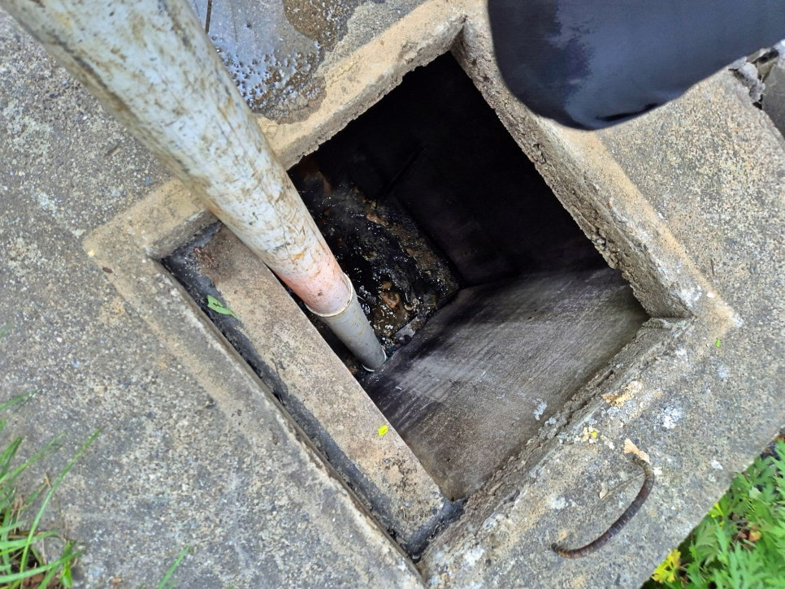

🏠 화성 팔탄면 상가 메인 하수관 청소, 맨홀 고압세척 현장
화성 팔탄 싱크대막힘 전문 시공 후기

📋 작업 개요
- 위치: 화성 팔탄, 팔탄, 화성
- 서비스 유형: 싱크대막힘, 하수구막힘, 배관막힘, 맨홀막힘, 역류해결, 뚫는업체, 배관청소, 고압세척, 설비공사
- 작업 일시: 2026. 6. 15. 15:41
- 업체명: 하수구수사대 (010-5615-2118)
🔍 문제 상황
화성 만세구 팔탄면 상가 메인 하수관 역류,
맨홀 막힘 고압세척 배관 청소 현장 후기
환영합니다.
화성 만세구 팔탄면에서 하수구막힘과
상가 메인 하수관 청소를 진행하고 있는
하수구수사대입니다.
오늘 현장은 화성 팔탄면에 있는
상가 건물입니다.
건물 안에 빵집과 음식점이 함께 있어
평소 물 사용량이 많은 곳이었고,
하수구 맨홀 배관 쪽에서 물이
시원하게 빠지지 않는 증상이 있었습니다.
상가 외부 메인 하수관 고압세척 장비 세팅 모습
화성 팔탄면 하수관 청소 현장 핵심 요약
- 상가 메인 하수관 배수가 느려진 현장
- 음식점과 빵집이 많아 기름때와 이물질 누적
- 배관 내시경 확인 후 고압세척으로 청소 진행
1, 상가 메인 하수관은 왜 자주 막힐까요?
상가 건물은 일반 주택보다
하수관 사용량이 많습니다.
특히 음식점, 빵집, 카페처럼
싱크대 사용이 많은 업종이 모여 있으면
기름 성분, 음식물 찌꺼기, 밀가루 성분,
세제 찌꺼기 등이 배관 안쪽에 조금씩
쌓이면서 배수 흐름이 나빠지게 되는데요.
하수구수사대의 고압세척 작업 차량 모습
처음에는 물이 내려가지만,

🔎 원인 분석
💡 전문가 진단: 화성 만세구 팔탄면 상가 메인 하수관 역류,맨홀 막힘 고압세척 배관 청소 현장 후기
시간이 지나면 배관 안쪽 공간이 좁아지고
결국 물이 빠지는 속도가 느려집니다.
그 결과 맨홀 쪽에서 물이 차오르거나
냄새가 올라오는 상황으로 이어질 수
있습니다.
2. 이번 현장은 어떤 상태였나요?
현장에 도착해 먼저 외부 맨홀과
메인 하수관 상태를 확인했습니다.
물이 전혀 안 빠지는 완전 막힘은 아니었지만,
배관 흐름이 많이 둔해진 상태였는데요.
화성 팔탄면 상가 메인 하수관 내시경 카메라 점검 모습
이런 경우 한 번 뚫는 방식으로 끝내면
며칠 뒤 같은 증상이 다시 생길 수 있습니다.
그래서 배관 내시경 장비를 넣어
관 내부 상태를 먼저 확인했습니다.
배관 내시경으로 하수관 내부를 확인하는 모습
내시경 화면에서는 하수관 내부에
찌꺼기와 이물질이 붙어 있는
막힘 구간이 확인됐는데요.
상가 특성상 사용량이 많기 때문에
막힌 부분만 건드리는 것보다
메인 하수관 전체 흐름을 살리는 방향으로
고압세척을 진행하는 것이 맞는
현장이었습니다.
맨홀 배관 내부로 고압세척 호스를 넣는 장면
3. 고압세척은 어떻게 진행했나요?
고압세척 호스를 맨홀 배관 쪽으로 넣고
배관 안쪽에 쌓인 이물질을 밀어내며
🔧 작업 과정
청소했습니다.
하수관 청소는 무조건 세게만 쏘는 작업이
아닙니다. 배관 방향, 물 흐름, 막힌 위치를
보면서 호스를 천천히 넣고 빼야 합니다.
고압세척 후 배수 흐름이 회복된 맨홀 내부 모습
화성 팔탄면 메인 하수관 고압세척이
진행되면서 배관 안쪽에 붙어 있던
찌꺼기와 오염물이 빠져나왔고,
처음보다 물 흐름이 좋아졌습니다.
4. 왜 주기적인 하수구청소가
필요할까요?
이번 현장처럼 음식점과 빵집이 많은 상가는
한 번 청소했다고 끝나는 구조가 아닙니다.
매일 물을 쓰면서 기름기와 찌꺼기가
계속 배관으로 들어가기 때문에
일정 기간이 지나면 다시 오염물이
쌓일 수 있습니다.
그래서 문제가 크게 터진 뒤
부르는 것보다 정기적으로 메인 하수관을
청소하는 편이 영업 중단이나 역류 피해를
줄이는 데 더 좋습니다.
5. 고압세척 후 맨홀 내부 물 흐름 확인
작업 후에는 다시 맨홀 내부를 확인하고,
배관에서 물이 정상적으로 흘러나오는지
점검했는데요.
이번 화성 팔탄면 상가 메인 하수관 청소
현장은 파손 공사나 굴착이 필요한 상황은
아니었습니다.
다만 상가 특성상 배관 사용량이 많고,
오염물이 누적되기 쉬운 구조였기 때문에
고압세척으로 메인 하수관을 정리하는 작업이
가장 현실적인 해결 방법이었습니다.
6. 상가 메인 하수관 청소 관련
자주 묻는 질문(FAQ)
상가 하수구는 막힌 뒤에 청소해도 되나요?
가능은 하지만 권장하지 않습니다.
음식점이 많은 상가는 막힌 뒤 청소하면
영업 중 역류가 생길 수 있어
주기적인 점검이 더 안전합니다.
고압세척만 하면 다시 안 막히나요?
배관 상태와 사용 습관에 따라 다릅니다.
기름기와 음식물 찌꺼기가 계속 들어가면
시간이 지나 다시 쌓일 수 있습니다.
지금까지 여러분들이 궁금해 하실


✅ 작업 완료
사항들에 대해 답변을 드렸는데요.
지금 만약 메인 하수관이 막혀 역류하기전
미리 점검과 고압세척 청소를 받고 싶은
분들은 언제든지 하수구수사대로 편하게
문의하시기 바랍니다.
그럼 여기서
화성 팔탄면에서 진행한 상가 메인하수관
고압세척 후기를 마치겠습니다.
감사합니다.
화성 팔탄면 상가 메인 하수관막힘 고압청소 영상
#화성하수구막힘 #팔탄면하수구막힘 #상가하수관청소 #음식점하수구막힘 #맨홀막힘 #고압세척 #메인하수관청소 #하수구수사대




⚠️ 주방 싱크대 배관 막힘 예방 수칙
- ✅ 기름기가 묻은 식기나 프라이팬은 설거지 전 키친타올로 반드시 기름때를 닦아내세요.
- ✅ 주기적으로 싱크대 개수대에 뜨거운 물을 가득 받아 한 번에 내려 배관 내부 기름을 씻어내세요.
- ✅ 배수구 거름망을 미세한 필터로 사용하시고 음식물 찌꺼기가 틈으로 새어 들지 않게 관리하세요.
- ✅ 베이킹소다와 식초를 뜨거운 물과 함께 일주일에 한 번씩 부어주면 배관 살균과 막힘 예방에 좋습니다.
💡 핵심 정리
- 확실한 장비 작업(내시경 점검 및 샤프트 스케일링)으로 원인을 뿌리 뽑습니다.
- 작업 후 1년 이내에 동일한 부위 재발 시 100% 무상 A/S 서비스를 보장합니다.
- 서울 · 경기 · 인천 전 지역에 24시간 언제든 긴급 출동할 수 있도록 항시 대기 중입니다.
❓ 자주 묻는 질문 (FAQ)
🚨 화성 팔탄 싱크대막힘 문제로 고민이신가요?
정확한 원인 진단과 확실한 시공으로 재발 없는 해결을 약속드립니다.
24시간 긴급 출동 | 서울 · 경기 · 인천 전지역 | 1년 내 재발 시 무상 A/S